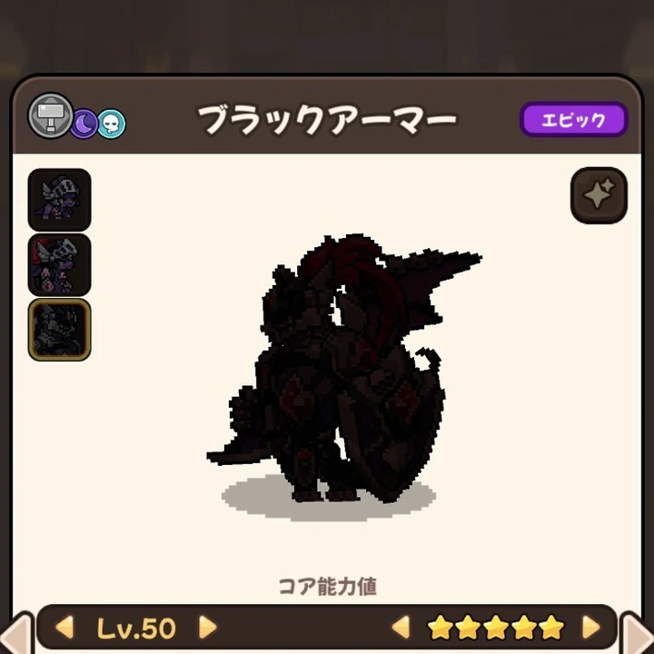

基本情報
- レアリティ
- Epic（エピック）
- 属性
- 鋼・闇・魂
- 攻撃区分
- 物理
- 主な獲得先
- 交配（14時間57分45秒）
EPIC DRAGON
ユーザー提供画像をもとに登録した★5 Lv.50確認済みデータです。

図鑑｜★5 Lv.50相手によって能力値が下落しない。
最も基本的な物理攻撃。鋼属性で攻撃し、エネルギーを1回復する。
闇の鎧で武装した鋼属性攻撃で敵に大ダメージを与え、自身の防御能力値が1段階上昇する。戦闘ごとに1回のみ使用可能。
| HP | 攻撃 | 防御 | 魔力 | 抵抗 | 速度 | 合計 |
|---|---|---|---|---|---|---|
| 955 | 1,457 | 1,413 | 1,092 | 1,048 | 868 | 6,833 |
1. 鋼、闇、魂属性を含む
2. 2属性以上を保有するドラゴンのみで交配